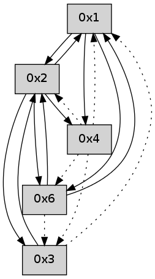

>> << IDX [start] -100 -25 -5 +0 +5 +25 +100 [350.038557053]
 Previous packets
----------------------------------------------------------------------
345.117473 beacon01(adaf) #0 coord=01,02,05,03,04,06 cycle=432.0ms assoc
-- color-indic=0 64 6f 84
345.127434 beacon02(adaf) #0 coord=01,02,05,03,04,06 cycle=432.0ms assoc 64 3e 7b
345.137435 beacon05(adaf) #0 coord=01,02,05,03,04,06 cycle=432.0ms assoc 64 98 51
345.147435 beacon03(adaf) #0 coord=01,02,05,03,04,06 cycle=432.0ms assoc 64 04 75
345.157435 beacon04(adaf) #0 coord=01,02,05,03,04,06 cycle=432.0ms assoc 64 a2 5f
345.167436 beacon06(adaf) #0 coord=01,02,05,03,04,06 cycle=432.0ms assoc 64 d6 43
----------------------------------------------------------------------
345.609580 beacon01(adaf) #0 coord=01,02,05,03,04,06 cycle=432.0ms assoc
-- color-indic=0 64 23 34
345.619542 beacon02(adaf) #0 coord=01,02,05,03,04,06 cycle=432.0ms assoc 64 72 cb
345.629542 beacon05(adaf) #0 coord=01,02,05,03,04,06 cycle=432.0ms assoc 64 d4 e1
345.639541 beacon03(adaf) #0 coord=01,02,05,03,04,06 cycle=432.0ms assoc 64 48 c5
345.649543 beacon04(adaf) #0 coord=01,02,05,03,04,06 cycle=432.0ms assoc 64 ee ef
345.659543 beacon06(adaf) #0 coord=01,02,05,03,04,06 cycle=432.0ms assoc 64 9a f3
345.670676 [Hello(1): seq=41 sym=2,3,6,4 sysInfo= stat=2:6,0,0,0/3:0,0,0,0/6:6,0,0,0/4:0,0,0,0]
----------------------------------------------------------------------
346.101688 beacon01(adaf) #0 coord=01,02,05,03,04,06 cycle=432.0ms assoc
-- color-indic=0 64 e7 5b
346.111650 beacon02(adaf) #0 coord=01,02,05,03,04,06 cycle=432.0ms assoc 64 b6 a4
346.121650 beacon05(adaf) #0 coord=01,02,05,03,04,06 cycle=432.0ms assoc 64 10 8e
346.131649 beacon03(adaf) #0 coord=01,02,05,03,04,06 cycle=432.0ms assoc 64 8c aa
346.141650 beacon04(adaf) #0 coord=01,02,05,03,04,06 cycle=432.0ms assoc 64 2a 80
346.151650 beacon06(adaf) #0 coord=01,02,05,03,04,06 cycle=432.0ms assoc 64 5e 9c
----------------------------------------------------------------------
346.593798 beacon01(adaf) #0 coord=01,02,05,03,04,06 cycle=432.0ms assoc
-- color-indic=0 64 aa 5c
346.603760 beacon02(adaf) #0 coord=01,02,05,03,04,06 cycle=432.0ms assoc 64 fb a3
346.613760 beacon05(adaf) #0 coord=01,02,05,03,04,06 cycle=432.0ms assoc 64 5d 89
346.623760 beacon03(adaf) #0 coord=01,02,05,03,04,06 cycle=432.0ms assoc 64 c1 ad
346.633761 beacon04(adaf) #0 coord=01,02,05,03,04,06 cycle=432.0ms assoc 64 67 87
346.643760 beacon06(adaf) #0 coord=01,02,05,03,04,06 cycle=432.0ms assoc 64 13 9b
346.655445 [Hello(2): seq=641 sym=6,3,1,4 sysInfo= stat=6:3,0,0,0/3:1,0,0,0/1:5,0,0,0/4:0,0,0,0]
346.659133 [Hello(4): seq=143 asym=3,6,1,2 sysInfo= stat=3:0,0,0,0/6:1,0,0,0/1:10,0,0,0/2:12,0,0,0]
346.662830 [Hello(1): seq=42 sym=2,3,6,4 sysInfo= stat=2:6,0,0,0/3:0,0,0,0/6:6,0,0,0/4:0,0,0,0]
----------------------------------------------------------------------
347.085908 beacon01(adaf) #0 coord=01,02,05,03,04,06 cycle=432.0ms assoc
-- color-indic=0 64 6e 33
347.095869 beacon02(adaf) #0 coord=01,02,05,03,04,06 cycle=432.0ms assoc 64 3f cc
347.105869 beacon05(adaf) #0 coord=01,02,05,03,04,06 cycle=432.0ms assoc 64 99 e6
347.115869 beacon03(adaf) #0 coord=01,02,05,03,04,06 cycle=432.0ms assoc 64 05 c2
347.125870 beacon04(adaf) #0 coord=01,02,05,03,04,06 cycle=432.0ms assoc 64 a3 e8
347.135870 beacon06(adaf) #0 coord=01,02,05,03,04,06 cycle=432.0ms assoc 64 d7 f4
----------------------------------------------------------------------
347.578018 beacon01(adaf) #0 coord=01,02,05,03,04,06 cycle=432.0ms assoc
-- color-indic=0 64 22 83
347.587979 beacon02(adaf) #0 coord=01,02,05,03,04,06 cycle=432.0ms assoc 64 73 7c
347.597979 beacon05(adaf) #0 coord=01,02,05,03,04,06 cycle=432.0ms assoc 64 d5 56
347.607979 beacon03(adaf) #0 coord=01,02,05,03,04,06 cycle=432.0ms assoc 64 49 72
347.617980 beacon04(adaf) #0 coord=01,02,05,03,04,06 cycle=432.0ms assoc 64 ef 58
347.627981 beacon06(adaf) #0 coord=01,02,05,03,04,06 cycle=432.0ms assoc 64 9b 44
347.639118 [Hello(1): seq=43 sym=2,3,6,4 sysInfo= stat=2:6,0,0,0/3:0,0,0,0/6:6,0,0,0/4:0,0,0,0]
----------------------------------------------------------------------
348.070126 beacon01(adaf) #0 coord=01,02,05,03,04,06 cycle=432.0ms assoc
-- color-indic=0 64 e6 ec
348.080086 beacon02(adaf) #0 coord=01,02,05,03,04,06 cycle=432.0ms assoc 64 b7 13
348.090087 beacon05(adaf) #0 coord=01,02,05,03,04,06 cycle=432.0ms assoc 64 11 39
348.100088 beacon03(adaf) #0 coord=01,02,05,03,04,06 cycle=432.0ms assoc 64 8d 1d
348.110087 beacon04(adaf) #0 coord=01,02,05,03,04,06 cycle=432.0ms assoc 64 2b 37
348.120088 beacon06(adaf) #0 coord=01,02,05,03,04,06 cycle=432.0ms assoc 64 5f 2b
----------------------------------------------------------------------
348.562233 beacon01(adaf) #0 coord=01,02,05,03,04,06 cycle=432.0ms assoc
-- color-indic=0 64 c3 d1
348.572194 beacon02(adaf) #0 coord=01,02,05,03,04,06 cycle=432.0ms assoc 64 92 2e
348.582196 beacon05(adaf) #0 coord=01,02,05,03,04,06 cycle=432.0ms assoc 64 34 04
348.592194 beacon03(adaf) #0 coord=01,02,05,03,04,06 cycle=432.0ms assoc 64 a8 20
348.602197 beacon04(adaf) #0 coord=01,02,05,03,04,06 cycle=432.0ms assoc 64 0e 0a
348.612196 beacon06(adaf) #0 coord=01,02,05,03,04,06 cycle=432.0ms assoc 64 7a 16
348.626629 [Hello(1): seq=44 sym=2,3,6,4 sysInfo= stat=2:6,0,0,0/3:0,0,0,0/6:6,0,0,0/4:0,0,0,0]
----------------------------------------------------------------------
349.054342 beacon01(adaf) #0 coord=01,02,05,03,04,06 cycle=432.0ms assoc
-- color-indic=0 64 07 be
349.064304 beacon02(adaf) #0 coord=01,02,05,03,04,06 cycle=432.0ms assoc 64 56 41
349.074305 beacon05(adaf) #0 coord=01,02,05,03,04,06 cycle=432.0ms assoc 64 f0 6b
349.084302 beacon03(adaf) #0 coord=01,02,05,03,04,06 cycle=432.0ms assoc 64 6c 4f
349.094304 beacon04(adaf) #0 coord=01,02,05,03,04,06 cycle=432.0ms assoc 64 ca 65
349.104303 beacon06(adaf) #0 coord=01,02,05,03,04,06 cycle=432.0ms assoc 64 be 79
----------------------------------------------------------------------
349.546450 beacon01(adaf) #0 coord=01,02,05,03,04,06 cycle=432.0ms assoc
-- color-indic=0 64 4b 0e
349.556412 beacon02(adaf) #0 coord=01,02,05,03,04,06 cycle=432.0ms assoc 64 1a f1
349.566411 beacon05(adaf) #0 coord=01,02,05,03,04,06 cycle=432.0ms assoc 64 bc db
349.576412 beacon03(adaf) #0 coord=01,02,05,03,04,06 cycle=432.0ms assoc 64 20 ff
349.586411 beacon04(adaf) #0 coord=01,02,05,03,04,06 cycle=432.0ms assoc 64 86 d5
349.596412 beacon06(adaf) #0 coord=01,02,05,03,04,06 cycle=432.0ms assoc 64 f2 c9
349.607528 [Hello(1): seq=45 sym=2,6,4 sysInfo= stat=2:6,0,0,0/6:6,0,0,0/4:0,0,0,0]